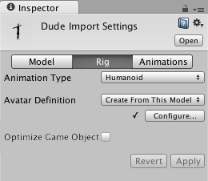

Rig tab
The settings on the Rig tab define how Unity maps the deformers to the Mesh in the imported Model so that you can animate it. For Humanoid characters, this means assigning or creating an Avatar. For non-Humanoid (Generic) characters, this means identifying a Root bone in the skeleton.
By default, when you select a Model in the Project view, Unity determines which Animation Type best matches the selected Model and displays it in the Rig tab. If Unity has never imported the file, the Animation Type is set to None:

| Property: | Function: | |
|---|---|---|
| Animation Type | Specfiy the type of animation. | |
| None | No animation present | |
| Legacy | Use the Legacy Animation System. Import and use animations as with Unity version 3.x and earlier. | |
| Generic | Use the Generic Animation System if your rig is non-humanoid (quadruped or any entity to be animated). Unity picks a root node but you can identify another bone to use as the Root node instead. | |
| Humanoid | Use the Humanoid Animation System if your rig is humanoid (it has two legs, two arms and a head). Unity usually detects the skeleton and maps it to the Avatar correctly. In some cases, you may need to set a change the Avatar Definition and Configure the mapping manually. |
Generic animation types

Generic Animations do not use Avatars like Humanoid animations do. Since the skeleton can be arbitrary, you must specify which bone is the Root node. The Root node allows Unity to establish consistency between Animation clips for a generic model, and blend properly between Animations that have not been authored "in place" (that is, where the whole model moves its world position while animating).
Specifying the root node helps Unity determine between movement of the bones relative to each other, and motion of the Root node in the world (controlled from OnAnimatorMove).
| Property: | Function: | |
|---|---|---|
| Avatar Definition | Choose where to get the Avatar definition. | |
| Create from this model | Create an Avatar based on this model | |
| Copy from Other Avatar | Point to an Avatar set up on another model. | |
| Root node | Select the bone to use as a root node for this Avatar. Only available if the Avatar Definition is set to Create From This Model. |
|
| Source | Copy another Avatar with an identical rig to import its animation clips. Only available if the Avatar Definition is set to Copy from Other Avatar. |
|
| Optimize Game Object | Remove and store the GameObject transform hierarchy of the imported character in the Avatar and Animator component. If enabled, the SkinnedMeshRenderers of the character use the Unity animation system's internal skeleton, which improves the performance of the animated characters. Only available if the Avatar Definition is set to Create From This Model. Enable this option for the final product. Note: In optimized mode, skinned mesh matrix extraction is also multi-threaded. |
Humanoid animation types

With rare exceptions, humanoid models have the same basic structure. This structure represents the major articulated parts of the body: the head and limbs. The first step to using Unity's Humanoid animation features is to set up and configure an Avatar. Unity uses the Avatar to map the simplified humanoid bone structure to the actual bones present in the Model's skeleton.
| Property: | Function: | |
|---|---|---|
| Avatar Definition | Choose where to get the Avatar definition. | |
| Create from this model | Create an Avatar based on this model | |
| Copy from Other Avatar | Point to an Avatar set up on another model. | |
| Source | Copy another Avatar with an identical rig to import its animation clips. Only available if the Avatar Definition is set to Copy from Other Avatar. |
|
| Configure... | Open the Avatar configuration. Only available if the Avatar Definition is set to Create From This Model. |
|
| Optimize Game Object | Remove and store the GameObject transform hierarchy of the imported character in the Avatar and Animator component. If enabled, the SkinnedMeshRenderers of the character use the Unity animation system's internal skeleton, which improves the performance of the animated characters. Only available if the Avatar Definition is set to Create From This Model. Enable this option for the final product. Note: In optimized mode, skinned mesh matrix extraction is also multi-threaded. |
Legacy animation types
](../uploads/Main/Rig-3.png)
| Property: | Function: | |
|---|---|---|
| Generation | Select the animation import method. | |
| Don't Import | Do not import animation | |
| Store in Original Roots (Deprecated) | Deprecated. Do not use. | |
| Store in Nodes (Deprecated) | Deprecated. Do not use. | |
| Store in Root (Deprecated) | Deprecated. Do not use. | |
| Store in Root (New) | Import the animation and store it in the Model's root node. This is the default setting. |